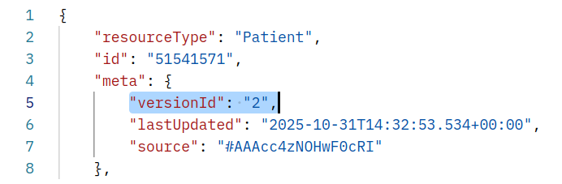

FHIR Tutorials
This page contains a series of FHIR tutorials for those just beginning to learn the new specification. The tutorials require no prior knowledge of FHIR or REST. At present these tutorials are in their alpha stage of development and participates at the NCTS connectathon in Melbourne, May 2016 will be the first students to try them out. We would appreciate any feedback you may have as we plan to build upon these in time to create a full set of tutorials from the very basic to the more complex.
Please note these tutorials have been written against current officially released version of FHIR, which is DSTU 2.
To continue, use the tabs at the top of the page and work through the tutorials from left to right starting with Simple Patient.
Patient resource
This tutorial is designed for FHIR beginners wishing to become familiarised with the basics of FHIR. In this tutorial, we will walk through the basic CRUD operations. CRUD stands for Create, Read, Update & Delete. These are the four main actions that you will use to interact with the FHIR resources within a FHIR server. Understanding these four operations is essential to working with any RESTful service which a FHIR server is an implementation of. REST stands for 'Representational state transfer' and RESTFul just means a system that conforms to the constraints of REST. You don't need to know any more about REST at this stage for the tutorial but if you want more on REST take a look at this page, Representational state transfer (REST)
Contents
Step 1: Setup a Http post client Step 2: Getting your first resource from a FHIR server Step 3: Updating your resource in the FHIR server Step 4: Adding a new resource to the FHIR server Step 5: Deleting a resource from the FHIR serverStep 1: Setup a Http post client
The simplest way to retrieve and send FHIR resources to and from a FHIR server is to use a Http post client. This tutorial will use Postman. Postman can be installed as a Chrome browser extension or as a Mac App. You could use any of a number of post clients but the tutiorial will asume your using Postman.
What is a post client? It is a tool that allows you to talk to servers using Hypertext Transfer Protocol (HTTP), the protocol the internet works on. When you use a internet browser the browser is converting your clicks and text into HTTP to send to the web server and the server returns content, your web page, back via HTTP. The browser then interprits the content as a web page and displays it on screen. When we work with FHIR the content is not a web page but rather XML or JSON. Our web browser is not very good at displaying raw XML or JSON so we need a HTTP client so that we can talk in HTTP and view the XML or JSON returned.
Head over to POSTMAN via the link and install Postman now if you have not already done so. You don't need an account to get Postman just download the application.
Once you are done you will have a Postman client that looks like this:
{kind=link}
There are other Http post clients that could be used like Fiddler so don't feel you have to use Postman.
Step 2: Getting your first resource from a FHIR server
So the first think we are going to cover is how you go about getting a FHIR resource from a FHIR server. Of course, before you can get a resource someone had to create one on the server. Luckily for you, this web page can do that for you. The button below will upload a FHIR Patient resource to a FHIR server for you and the tutorial will continue to explain how to retrieve that resource using the post client.
So before we move on click the button below to upload a FHIR Patient resource to the FHIR server. This action will give you a resource to play with independent of the other participants. To do this, all you need to do is hit the button below. Click the button now.
You FHIR patient resource is: ....Click the button for this to refresh!
So you have your own FHIR resource in the FHIR server and a post client to send and retrieve resources with. There are many publicly available FHIR servers for testing on the internet and a full list can be found here. For this tutorial we are going to be using the server found at the following address:
[Service Root URL]
The address above is called the 'Service Root URL' and it is from here that all further request to this server will begin. But of course, we need to further tell the server which resource type we are interested in. This is the next part of the URL. For this tutorial, we are dealing with Patient resources so we will extend the 'Service Root URL' by appending the resource type we are looking for. Take note that all resources begin with a capital letter: e.g. Patient.
[Service Root URL]/Patient
We also need to tell the server which particular Patient resource we want. Generally, you would want to use a Patient's Medicare record number, name or other identifiers and we will cover that later in searching. For now we are going to use the resource id to locate our patient. We will also cover more about resource ids a bit later. For now, let's just add the following resource id to our URL we are constructing:
[Service Root URL]/Patient/[id]
We're almost ready to get our resource from the FHIR server but there is one last part we need to cover. We need to understand a little bit about content negotiation. Don't worry, there is not much to it. FHIR resources can be expressed in either JSON or XML, these are just two different ways that we can format a resource's data. Before we talk to our server we need to agree on which format we are going to talk in. To tell the server what format we want to be returned we pass it the Accept property and it needs to be equal to either application/fhir+xml or application/fhir+json. This is something we need to configure in our Http post client Postman. In Postman go to the Header tab and add the following property: Accept application/fhir+xml, as seen in this screenshot.
{kind=link}
Ok, were done. All you need to do is paste the full URL we constructed into the Postman's URL box, ensure the call type is set to GET and hit the Send button. See this screenshot if you need help.
{kind=link}
You should have received your first FHIR Patient resource back from the server in an XML format. Well done!
Try changing the Accept property to application/fhir+json hit Send again. You will receive the same resource content although now in a JSON format. Make sure you set it back to application/fhir+xml when your done as the rest of this tutorial will be using the XML format.
Step 3: Updating your resource in the FHIR server
So now you know how to get a resource from the FHIR server. Next, we are going to update an existing resource on the FHIR server. Let's pretend the patient's name was entered incorretcly and it's your job to fix it up. We are just going to use the same resource you retrieved from Step 2: Getting your first resource from a server.
In Postman, you first need to set the call type to PUT, then click the Body tab. Make sure you are clicking the right Body tab as there are two. The Body tab at the bottom is where resources returned by the FHIR server are seen, as in Step 1. The Body tab at the top, just under the URL box, is where we place resources to send to the server. You will also need to click the radio button labelled raw to allow the Body's text box to be seen. Take a look at this screenshot for help.
{kind=link}
Now go ahead and copy the Patient resource we received from the server from the bottom Body section to the top Body section and then in the top section edit the patient's given name and surname to your name. Don't worry, our PAS team is too busy with duplicate patient merging to notice.
With your edits made, it's time to update. But before we do that, we need to cover the last part of 'content negotiation'. In the GET example, we used the Accept property to tell the server the format (XML or JSON) we wanted to be returned by the server. This time, it is us sending content to the server by way of our Patient resource. In this case, we need to tell the server what format the content we are sending is in. To do this we return to the Header tab and use the Content-Type property, and as before we need to set it as either application/fhir+xml or application/fhir+json. But of course, it needs to match the actual content we are sending. So if your Patient resources is in a XML format then use application/fhir+xml or if it is JSON use application/fhir+json. Here is a screenshot of it being set to XML.
{kind=link}
Notice that the Accept property is still set from the last GET calls we made. This is fine and actually desired, as long as it is still set to the content type you want to be returned. Now that these two properties are set Postman will remember them for our session, so no need to keep setting them; unless you want to change between XML and JSON. From here forward the exercise will just assume you have these two properties set and will not instruct you to set them again. Furthermore, our exercises will all be done in XML.
Accept: |
application/fhir+xml or application/fhir+json {format to be returned from the server} |
Content-Type: |
application/fhir+xml or application/fhir+json {format being given to the server} |
So now it's time to hit Send which will update the Patient resource on the FHIR server.
Once you have updated try doing a GET, as in Step 3, to see if your resource was updated. If you compare the versionId within the resource you will see it increased by one.
Step 4: Adding a new resource to the FHIR server
You should now know how to get a resource from a FHIR server and how to update that resource. Now we are going to look at adding a new resource to a FHIR server. Perhaps we have a brand new patient to enter into our system. In the previous 'Step 3: Updating your resource in the FHIR server' we used the call type of PUT to update a resource. These call types are known as HTTP verbs. The most commonly used verbs for FHIR are:
GET: Used to retrieve known existing resources and requires a resource id or search parameters to identify the resource or resources required.
PUT: Used to update existing resources and always requires a resource id identifying the resource being updated. It can also add a new resource if no resource is found for the id given. In this case, most servers will discard the id and assign their own new id when adding the new resource.
POST: Used to add new resources, there must not be an id in the URL or the resource's content.
DELETE: Used to remove an existing resource from the server and always requires a resource id to identify the resource being removed. Most servers keep a history of the resource so you can still retrieve the removed resources using the history interaction, we will cover this later.
Let's take our same Patient resource as used in Steps 2 & 3, as our template for the new patient, change it a little, and submit it to the FHIR server as a brand new resource. The first thing to do is change the verb in Postman to be POST and then copy in your new Patient resource into the body section at the top of Postman.
Now we need to edit both the resource and the URL to perform an add. For the URL we need only the 'Service Root' and the resource type, which for this example is Patient as seen below:
[Service Root URL]/Pateint
That is the URL done, now for the resource itself. Near the very top of the resource, you will see an id element with an attribute of value which is equal to the id of the resource we copied. This is the resource id and as we are creating a brand new resource we need to remove this whole element. If we don't the server will return a 400 Bad Request error. Feel free to hit Send before you remove it to see this error in action; don't worry, the server won't catch on fire.

So after hitting Send with the id element removed you should be returned the entire resource and a status of 201 Created. If you inspect the returned resource's id element you will find that the server has assigned a new id value, this is now the FHIR servers assigned id for your resource. It's also worth noting the versionId in the meta element, this should be set to '1' as this is the very first version of this resource.
Now you know how to add new resources, the same process works for all resources you just need change the resource type on the end of the URL
Step 5: Deleting a resource from the FHIR server
This one's easy, set the Http verb to DELETE and use the 'Service Root' appended with the resource type you wish to remove e.g. 'Patient' and append to that, the resource id of the resource you want to remove. So if you had a Patient resource with an id of '123456' then this URL would remove that resource
[Service Root URL]/Pateint/123456
But before you delete a resource lets think about what happens on the server. Most, but not all FHIR servers support resource history. This means that every update you make to a resource is kept on the server and each update increments a version number. This version number is known as the versionId. When you delete a resource the server treats this action as just another update, yet this update is marked as a deleted and you will no longer find the resource when doing a normal GET call. But you can retrieve the deleted resource by it's versionId. So to explain this a bit better, consider the operations in order below:
- Patient resource, added via a POST {this is versionId = 1}
- Patient resource, updated via a PUT {this is versionId = 2}
- Patient resource, deleted via a DELETE {this is versionId = 3}
- Patient resource, attempted to retrieve by resource id via a GET {no resource will be found}
- Patient resource, attempted to retrieve by resource id and _history/2 via a GET {resource will be found as updated in step 2}
- Patient resource, as retrieve in step 5, added via a POST {this is versionId = 4}
The key point here is that deleting a resource is also considered a version update.
So lets now go ahead and delete our orginal Patient resource. Using the URL below, setting the Http verb to DELETE and hitting Send.
[Service Root URL]/Patient/[id]
You should receive back a 204 No Content return code which indicates the resource was successfully removed.
Following this you can then retrive the same resouce back again using the _history/[version number you require]. Lets try and retrive versionId=1 using the URL as below, and the Http verb of GET.
[Service Root URL]/Patient/[id]/_history/1
Now you can delete resources and retrive historical versions of resources, well done!
Simple Search
This tutorial will build on the foundation laid out in the Simple Patient tutorial to introduce searching against FHIR resources.
Step 1: Name Searching
Let's start with the simplest of searches, a patient's family name search.
The Simple Patient tutorial uploaded a Patient resource for a Mr Sam Fhirman. Let's try and find that Patient resource by searching on family name. To do this we need to construct a URL starting with the [Service Root URL] followed by the resource type Patient, a question mark character '?' and finished with the search parameters we wish to search with family=Fhirman in this case.
Perform this search in your Postman client using he Http verb GET now, take a few minutes to examine the result returned:
https://sqlonfhir-dstu2.azurewebsites.net/fhir/Patient?family=fhirman
Did you notice that you received a Bundle resource in return? When you perform a search you are more than likely to receive many resource matching your search. In FHIR search results are always returned as a Bundle. A Bundle is used in FHIR to gather a collection of resource into a single instance. The reason there are so many Mr Sam Fhirman Patient resources is due to every student taking part in the Simple Patient tutorial uploading their own instance of the same patient. This may explain why our PAS team is so busy with duplicate patient merging. Of course this should not be the case in the real world. Although the PAS team may have another opinion.
Now would be a good time to go to the FHIR specification to read about the bundle resource. Do that now and come back when you’re done.
Step 2: Extended Search
In the previous step we searched by the patient's family name, but what else can we search upon? The search parameters you can use are Resource type dependant. Each resource type defines the parameters which you can search upon it. Right click and open the Patient resource page in a second browser tab and scroll to the very bottom of the page. Here you will find the list of possible search parameters for the Patient resource. Take a look at some other resource types and the search parameters they define.
In the previous tutorial, Simple Patient, you should have created a new patient resource with your own name as the patient's name. Try and find that resource using your own surname and first name. Remember to reference the FHIR specification to work out which search parameters you will need.
Step 3: Search Parameter Types
The searches we have done so far, family & given, were on simple string datatypes. FHIR defines eight different search datatypes as follows:
Each and every search parameter on each resource page also defines the search parameter data type it uses. The screenshot below is taken from the Patient resource page. Notice that given uses string in column two and that identifier uses datatype token.

Using the references above try and answer these questions:
These few questions have focused on the token search parameter datatype but I strongly encourage you to read then entire Search page in the FHIR specification at a later date.
Patient with References tutorial
This tutorial will build on the foundation laid out in the Simple Patient tutorial to introduce resource linking in FHIR by the way of references.
Contents
Step 1: Setup Step 2: Find your patient Step 3: Observe external references Step 4: Search for a resource using a reference Step 5: Observe contained resource referencesStep 1: Setup
Prior to doing the tutorial, a set of FHIR resources needs to be uploaded to the tutorial FHIR server so you can query them. Press the Upload button below to send your resources up:
Step 2: Find your patient
The patient you'll be working with is:
Open Postman and retrieve the resource, following instructions here. You should see this in Postman when successful.
{kind=link}
Our sample patient today is Pieter van de Heuvel, who came into the hospital for his scheduled heart valve replacement, but fainted before the procedure could begin - for this reason, the medical staff decided to do some blood tests on the patient first.
There are 6 resources we'll be working with in this use case - Patient, Encounter, DiagnosticOrder, DiagnosticReport, and two Observations.
Step 3: Observe external references
In FHIR resources are referenced, or linked, in one direction only. For example, if you have two resources - a Patient and an Observation - a Patient will not be linked to any of the Observations; instead all Observations will be linked to the Patient. This is an optimisation measure - it means that as you add more Observations, you do not have to keep updating your Patient resource with the new references. This means that the Patient doesn't have an explicit link to any of the Observations - but not to worry, there is a way to see all Observations that a Patient has, which we'll cover later.
In order to see which resource links to which, open up the FHIR specification for a specific resource and observe the list of resources that reference it. In our example, you can find out if it is a Patient linking to an Observation or an Observation linking to a Patient by opening both the Patient and Observation FHIR specification pages. You'll notice that Patient mentions that it's referenced by the Observation resource and Observation does not, instead it has a subject field which references Patient.
{kind=link}
{kind=link}
In the same Postman window, press Ctrl/⌘+F and copy/paste reference - you'll find that the Patient contains just one reference, which is the medical organisation that the Patient belongs to. Even though our patient had an encounter (when he came into the hospital for his procedure), it is not listed here.
{kind=link}
Instead, it is the Encounter that has a reference to the Patient. That way, more Encounters can be added without having to update the Patient resource every time (which can become very time-consuming in a large system). In the next section, you'll see how you can find the Encounter that's associated with your Patient.
Step 4: Search for a resource using a reference
FHIR has a notion of Search Parameters, which allow you to locate resources given certain data you know about them. As a sample usecase, let's find the Encounter that's associated with our patient. Scrolling down to the Search Parameters section of Encounter, we see that there's one named patient which allows us to search for the patient present in the encounter.
{kind=link}
Thus, given the patient's server ID of (press Upload first) (this can be seen at the end of the URL and in the <id> field), in order to find which encounters our patient has, the query follows this format:
{kind=link}
(press Upload first)/Encounter?patient=<patient id>
It essentially says - "give me all Encounters that have this patient ID as the subject patient". Try entering (press Upload first)/Encounter?patient= into Postman - you'll see a result like this:
{kind=link}
Three things are of interest are:
- we get a Bundle resource back. A Bundle is essentially a container for resources, used in many places including search results.
- our Bundle has 1 result in it, which is...
- the expected Encounter resource, given how our Patient has just one recorded encounter.
We've now successfully located which encounters our patient has using a reference - congratulations!
Step 5: Observe contained resource references
References don't always have to point to a resource located elsewhere, they can also point to resources that are contained (embedded) in the resource. Load up our DiagnosticOrder in Postman:
(press Upload first)
Press press Ctrl/⌘+F and copy/paste practitionerid - you'll find two references to it, one in <reference value="#practitionerid" /> and another in a <contained> field:
Whenever you see an identifier start with the hash sign (#), you will see a corresponding resource within the <contained> field, embedded in the parent resource. Such embedding should only be done in the cases where the embedded resource can't exist on its own - for example it can't have an identifier to uniquely identify it or it only makes sense in a particular transaction scope.